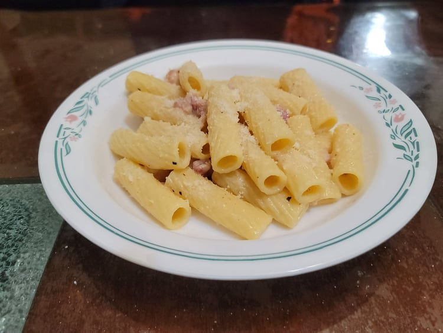

Pasta alla Gricia

Ingredients:
- 1 lb Dried rigatoni
- 8 oz Guanciale or Pancetta
- 1 cup Pecorino, finely grated
- Black pepper, freshly ground, to taste
Instructions:
- Bring a pot of salted water to a boil. Add the pasta and let cook until right before al dente, about 11-12 minutes.
- While the pasta is cooking, add the pancetta to a large pan over medium heat. Cook until the pancetta is crispy and most of the fat has rendered out.
- Strain the pasta from the water and add it into the pan along with a ladle of pasta water. Cook for another minute. Then remove from heat.
- Add in another ladle of pasta water and toss for about 30 seconds. Then add in the cheese gradually while continuing to toss. Ladle in more pasta water as it continues to dry up. Season with black pepper to taste and add extra pecorino if desired. Serve warm.